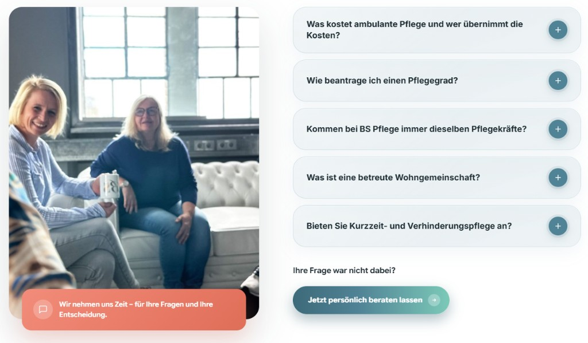
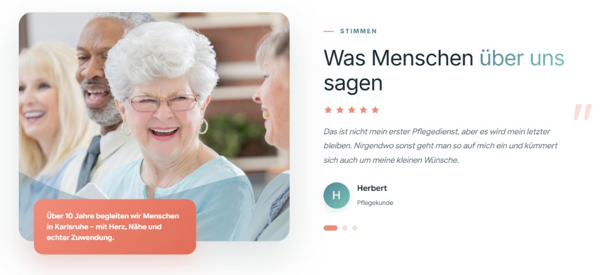
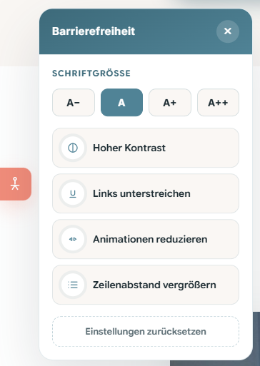

Individuelle Pflege
Lösungen, die zu Ihrem Leben passen.
Design-Dokumentation · BS Pflege Karlsruhe
Dieses Handout dokumentiert das visuelle Erscheinungsbild der BS-Pflege-Website: Farbkonzept, Typografie, wiederkehrende UI-Komponenten und Layoutprinzipien – kuratiert für Präsentation, Abstimmung und PDF-Export.
01
Ein warmes, vertrauensvolles Farbsystem: Petrol als Markenfarbe, Mint und Korall als Akzente, Beige-Töne für Wärme und Off-White für ruhige Flächen.
Primary
#508396
Markenfarbe, Icons, Links, Buttons, Section-Labels
Primary Dark
#3d6a7a
Button-Verläufe, Footer, dunkle Panels, Hero-Overlay
Primary Light
#6a9aad
Hover-States, sekundäre Akzente
Primary Soft
#e8f0f3
Hintergründe, Icon-Boxen, dezente Flächen
Accent Mint
#7cc9b8
Button-Verlauf-Ende, Headline-Gradient, Topbar-Icons
Accent Korall
#f28c7a
Section-Label-Linie, Hero-Karte, Icon-Hover, Badges
Beige / Secondary
#af9e88
Warme Akzent-Headlines, sekundäre Wärme
Accent Korall Dark
#e06e58
Alternative Hero-Karte, stärkere Korall-Flächen
Background
#f3ece4
Seitenhintergrund, warme Basis
Off-White
#faf7f4
Karten, FAQ-Section, helle Panels
Ink
#1e2d33
Fließtext, Headlines, Topbar, Footer
Ink Soft
#5c6d74
Subheadlines, Meta-Text, Beschreibungen
linear-gradient(90deg, #3d6a7a → #508396 → #7cc9b8)
02
Zwei Schriftfamilien bilden das typografische Fundament: Inter für Headlines und Labels, Google Sans Flex für Fließtext und UI-Elemente.
Gewichte 400–800. Leichtes Letter-Spacing (−0.025 bis −0.03em), ruhige, moderne Anmutung.
--font-head: "Inter"Variable Schrift für Body, Buttons und UI. Hohe Lesbarkeit bei großzügigem Zeilenabstand (1.8).
--font-body: "Google Sans Flex"Fließtext · Gute Pflege entsteht im Gespräch, im Alltag und im Vertrauen zueinander. BS Pflege verbindet fachliche Kompetenz mit Herzlichkeit.
Lead-Text · Pflege darf sich nicht wie ein System anfühlen.
Meta-Text · Montag–Freitag: 09:00–16:00 Uhr
03
Klare Hierarchie von Hero (H1) über Sektionen (H2) bis zu Karten (H3).
Akzentwörter werden durch den Gradient-Klassen .headline-serif hervorgehoben.
Subheadline als erklärender Fließtext unter der H2 – zentriert, max. 680px.
H1 – nur im Hero, emotional, max. 620px Breite, weiß auf Bild
H2 – Sektionsanker, oft mit Gradient-Wort
H3 – Karten, Prozess-Schritte, Footer-Spalten (700 weight)

Hero-H1 auf Vollbild-Medium mit Verlauf-Overlay – stärkste typografische Stufe der Seite.
04
Pill-förmige Buttons mit Verlauf, integriertem Pfeil-Kreis und Lift-Hover. Radius 50px, fette UI-Schrift (700), klare Interaktions-Feedback-Schleife.
| Variante | Padding | Radius | Hover |
|---|---|---|---|
.btn--primary |
15×18 / 28px (lg: 17×20 / 32px) | 50px (Pill) | translateY(−3px), stärkerer Schatten |
.btn--outline |
14×28px | 50px | Fill Primary, Lift |
.btn--outline-light |
13×18 / 28px | 50px | Transparenter Weiß-Fill auf dunklem Panel |
05
Call-to-Actions sind durch den wiederkehrenden Primary-Button, Telefon-Link im Hero und kontextuelle CTA-Bänder klar erkennbar.
Primary Large + Telefon-Play-Button mit Icon-Kreis – direkter Handlungsaufruf above the fold.
Nach Inhaltsblöcken: Button + optional Avatar-Stack (Angehörige) oder Texteinleitung (FAQ).
Jetzt Kontakt aufnehmen – für eine verlässliche und persönliche Pflegeberatung
Beratungsgespräch vereinbaren
Kontakt-Panel: Headline + Kontaktdaten + Dual-CTA (Primary Ghost + Outline Light) auf Teal-Gradient.
06
Overlay-Header im Hero, sticky nach Scroll mit Logo-Switch (weiß → dunkel). Desktop: horizontale Links + Primary-CTA. Mobile: Vollbild-Drawer.
Nach Hero-Scroll: fester Header mit weißem Hintergrund, Schatten und dunklem Logo.
Hamburger → Vollbild-Nav mit Close-Button, Overlay und großzügigen Tap-Targets.
Aktive Sektion wird in der Navigation hervorgehoben (JS in main.js).
07
Vollbild-Slider mit 5 Bildern, Teal-Overlay, zentrale Headline links unten, schwebende Feature-Karten am unteren Rand.

Medien-Slider · Ken-Burns-Zoom auf aktivem Slide
08
Ein konsistentes 1280px-Container-System mit großzügigen Section-Paddings, 2-Spalten-Grids für Bild-Text-Module und zentrierten Section-Headers.
Section-Heads sind immer mittig ausgerichtet – Label, H2 und Subtext bilden eine klare Einheit.
09
Glassmorphismus-Karten mit Lift-Hover, einheitliche Icon-Kreise und abgestufte Varianten für Prozess, Vorteile, Hero und Accordion.
Erzählen Sie uns, was gerade gebraucht wird – ganz in Ruhe.
Wir zeigen verständlich, welche Möglichkeiten es gibt.
Gemeinsam finden wir die Unterstützung, die wirklich passt.
Jeder Plan entsteht gemeinsam mit Ihnen.
Der Mensch zählt, nicht die Nummer.
Fachlich stark und mit echtem Herz.
Lift translateY(−6px), stärkerer Schatten, Icon-Kreis wechselt zu Korall.
Bild-Panels mit Expand-Animation – horizontales Accordion mit Nummer, Text und Ghost-CTA.

Accordion-Panels: Vollflächiges Bild, Overlay, expandierbarer Content-Bereich.
10
Weiße Sektion mit 2-Spalten-Layout: Bild + Korall-Badge links, Accordion-Liste rechts. Plus-Icon rotiert bei Öffnung, sanfte Panel-Animation.

FAQ · Live-Ausschnitt aus der Website: 2-Spalten-Layout mit Beratungsbild und Korall-Badge links, Glass-Accordion mit Plus-Toggle rechts, Abschluss-CTA darunter.
11
Zwei Slider-Typen: Hero-Bildrotation (automatisch, Crossfade) und Testimonial-Slider mit Dot-Navigation und Zitat-Typografie.
5 Slides, opacity-Transition, Ken-Burns auf aktivem Bild. Keine sichtbaren Controls – atmosphärisch.
#heroSlider · 6s IntervallSterne, großes Anführungszeichen, Autor-Avatar, Dot-Pagination unten rechts.
#testiSlider · 3 Slides
Testimonial-Slide · Screenshot aus der Live-Website: Bild links mit Korall-Badge (60% Spaltenbreite), Slider rechts mit Sternen, Zitat, Autor-Avatar und Dot-Pagination.
12
Ergänzende Bausteine für Vertrauen, Orientierung und Barrierefreiheit.


Barrierefreiheits-Widget · Live-Ausschnitt aus der Website: Fixiert links, öffnet Panel mit Schriftgröße (A− bis A++), Hoher Kontrast, Links unterstreichen, Animationen reduzieren, Zeilenabstand und Reset.
13
Das BS-Pflege-Design verbindet medizinische Seriosität mit menschlicher Wärme – ein konsistentes System für Vertrauen und Nähe.
Wiedererkennbare Buttons, konsistente Icon-Kreise, durchgängiges 1280px-Layout.
Professionell und einladend zugleich – ideal für Pflege & Vertrauensbranche.
Geeignet als Referenz für Erweiterungen, Landingpages und Print/PDF-Präsentationen.